Zone
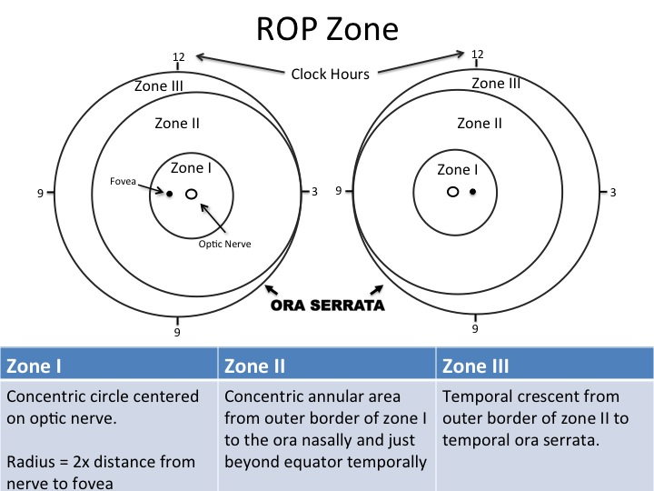
Zone overview

Examples of Zone I
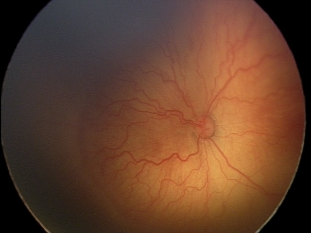
Example 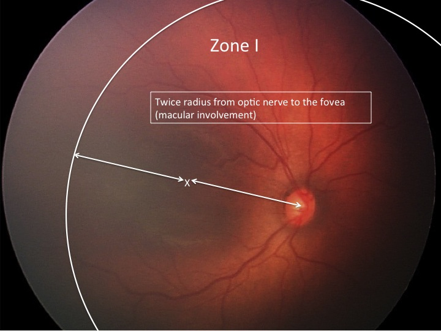
Annotated


Examples of Zone II
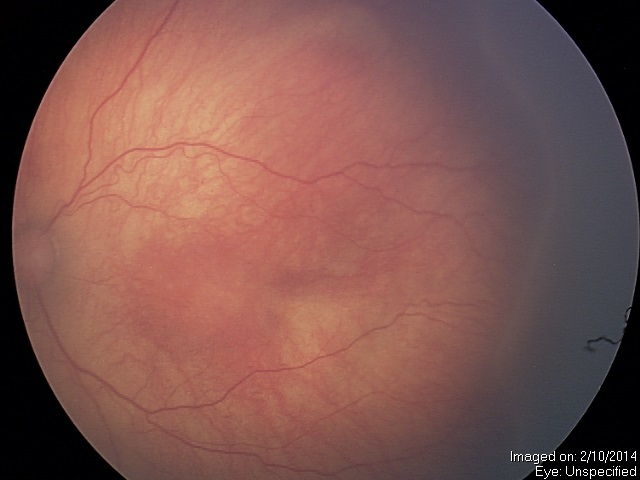
Example 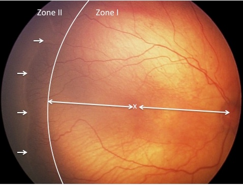
Annotated


Examples of Zone III
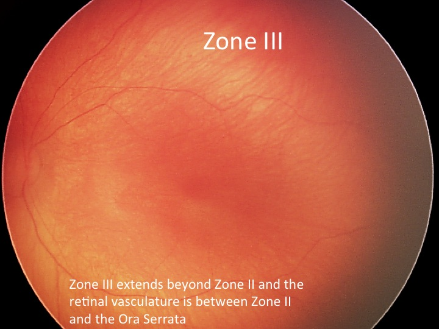
Annotated

Stage
Examples of Stage 1
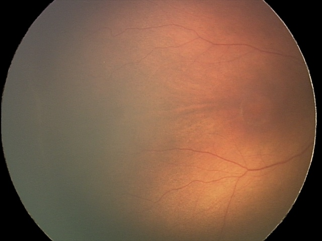
Example 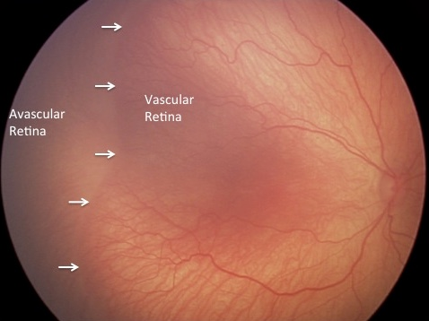
Annotated


Examples of Stage 2
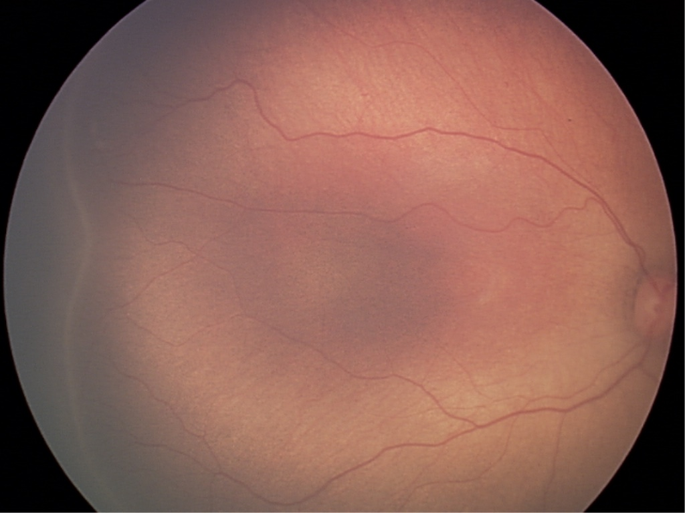
Example 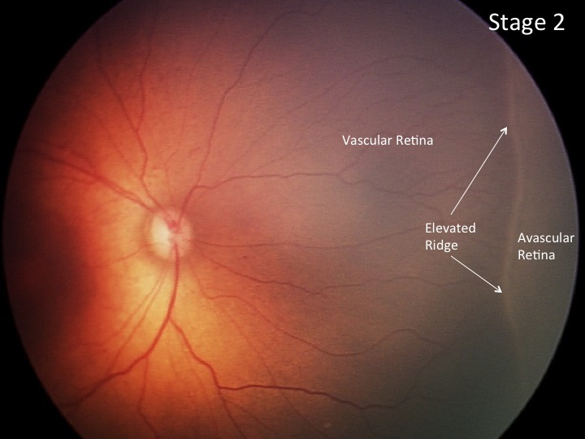
Annotated


Examples of Stage 3
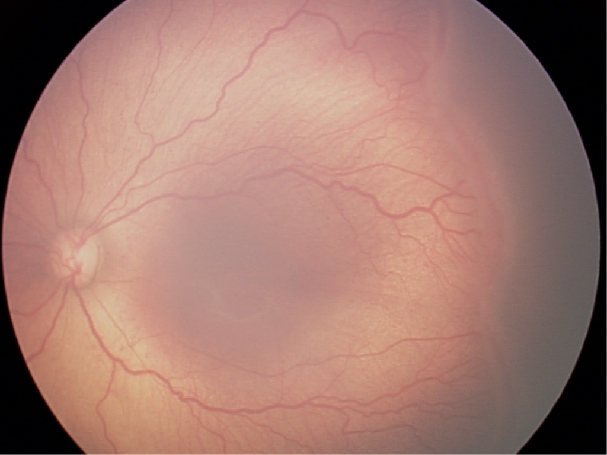
Example 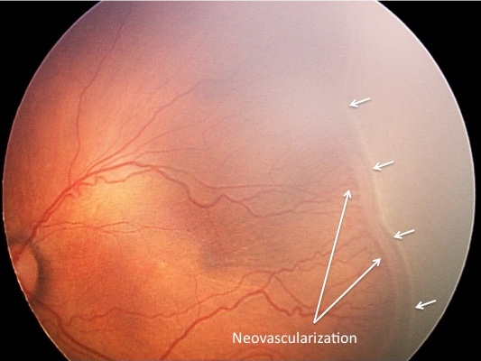
Annotated


Examples of Stage 4
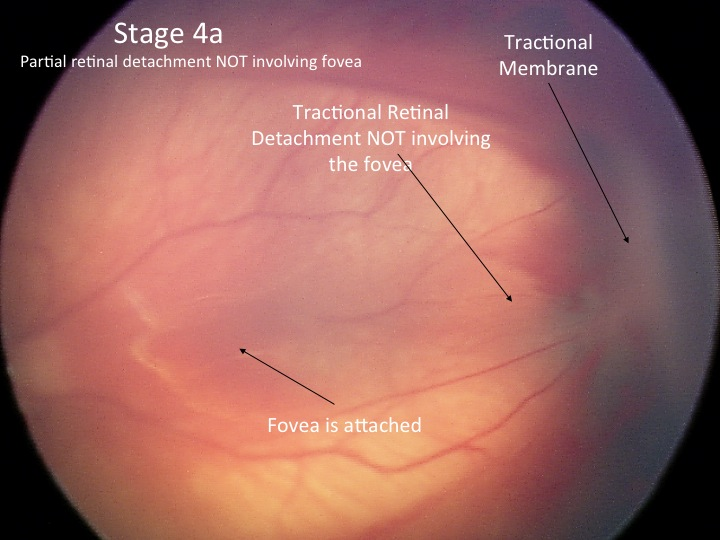
Stage 4a 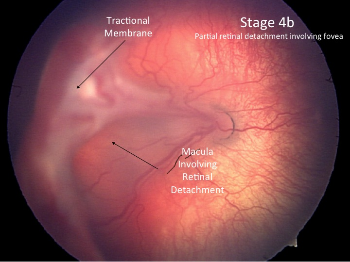
Stage 4b


Examples of Stage 5
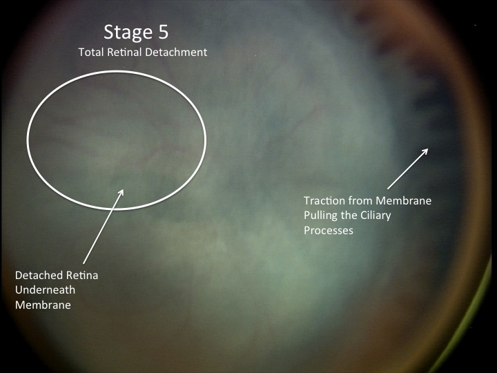
Annotated

Plus
Examples of No Plus
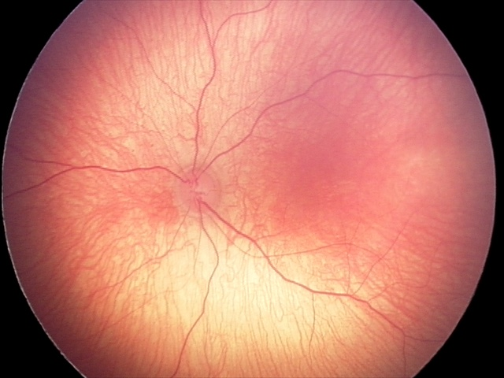
Example A 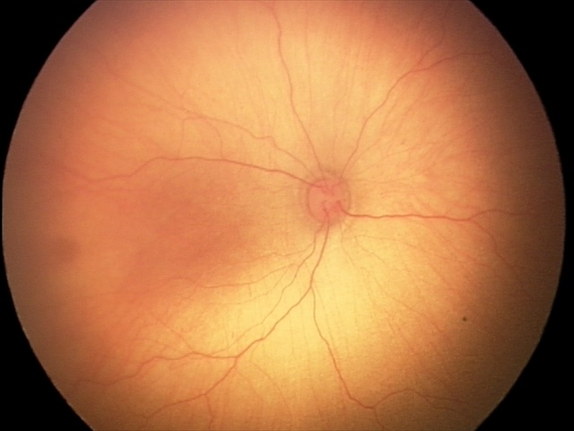
Example B


Examples of Pre-Plus
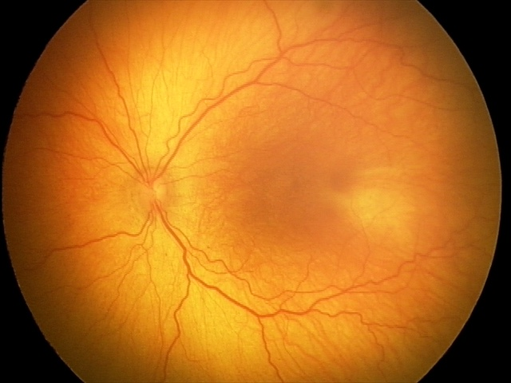
Example 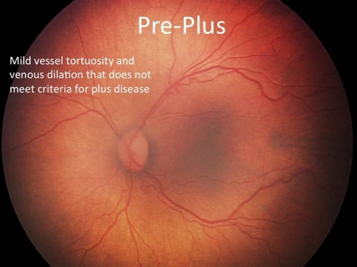
Annotated


Examples of Plus
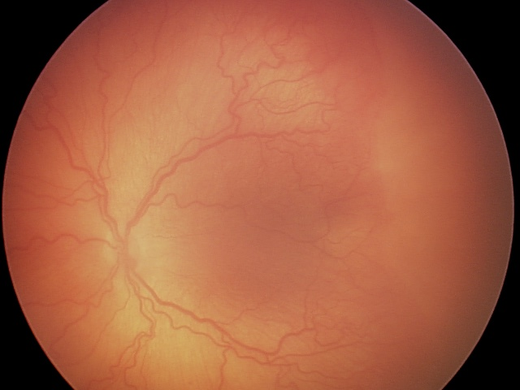
Example 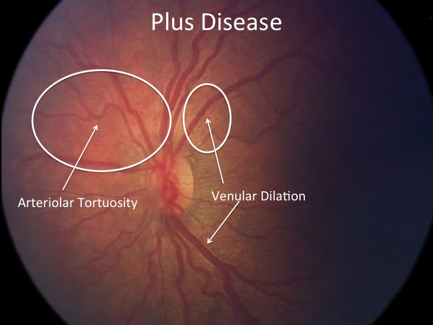
Annotated


Examples of AP-ROP
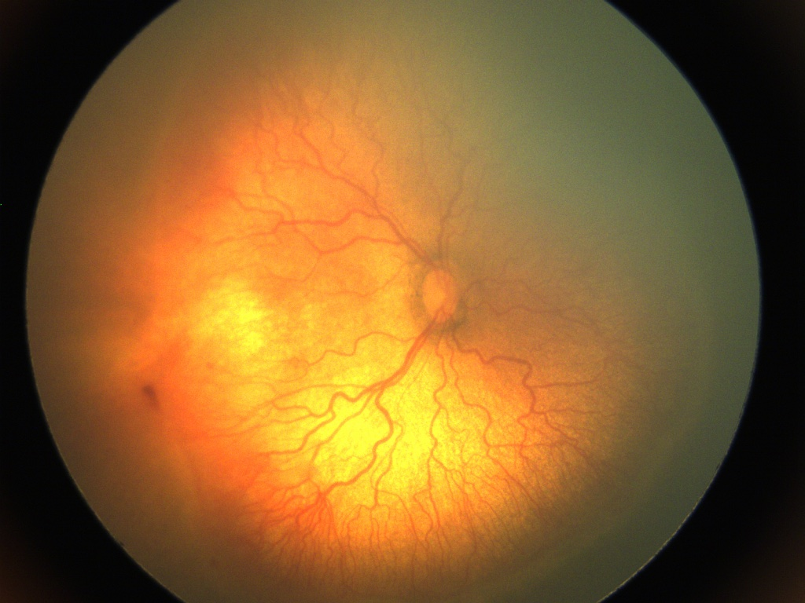
Example 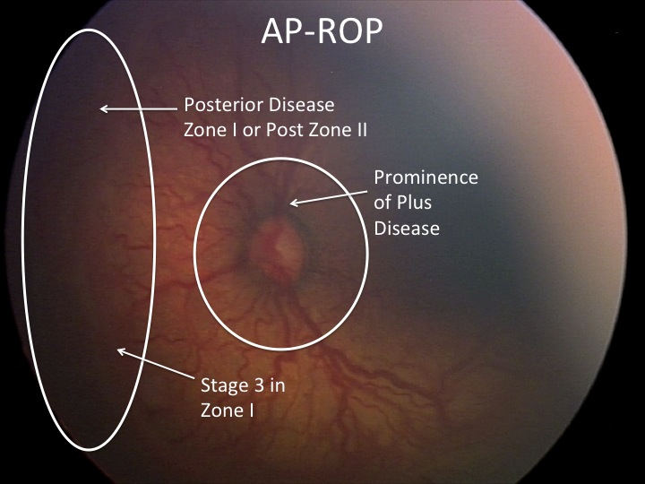
Annotated